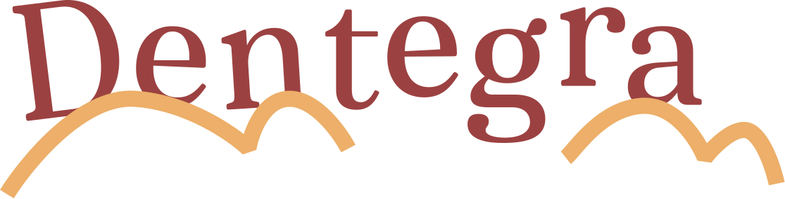
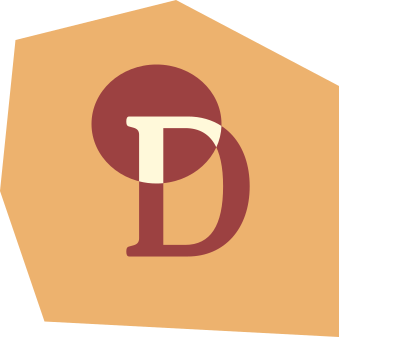
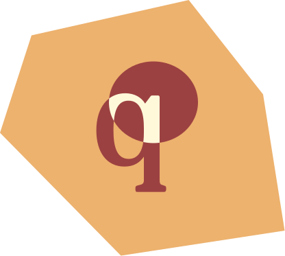
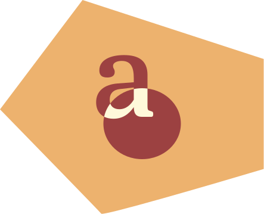
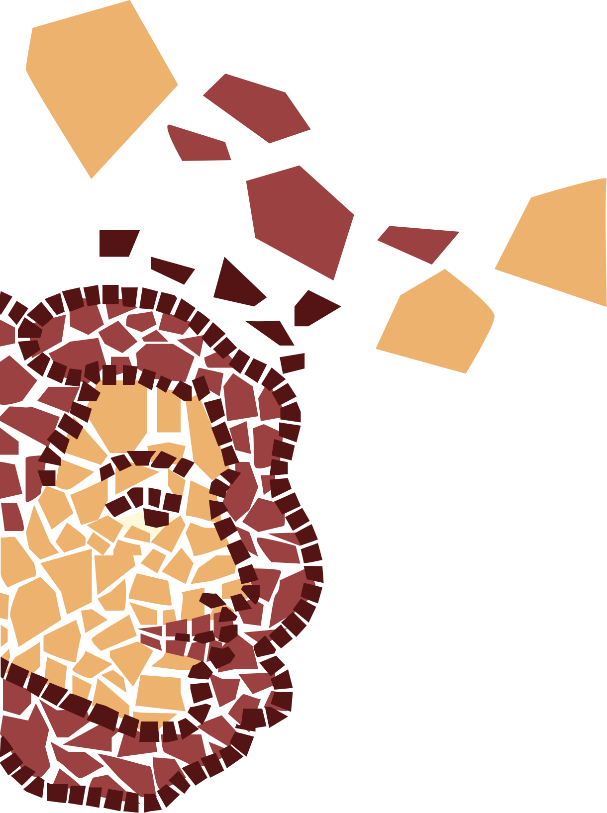
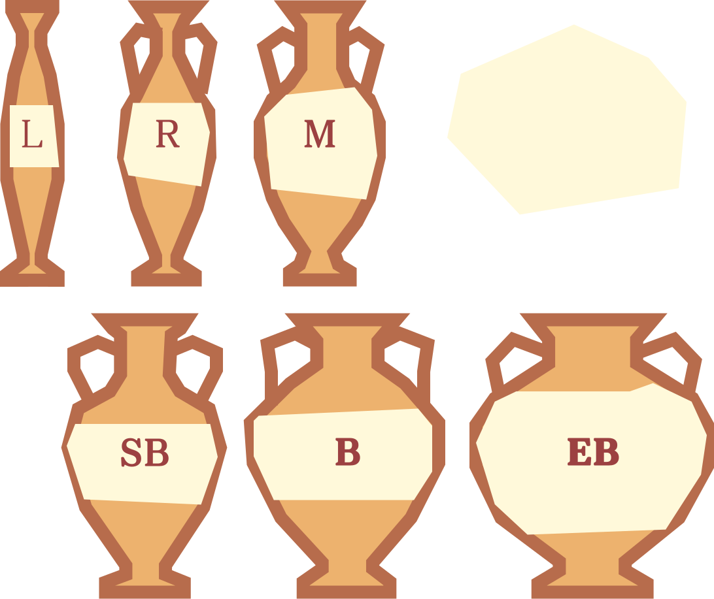
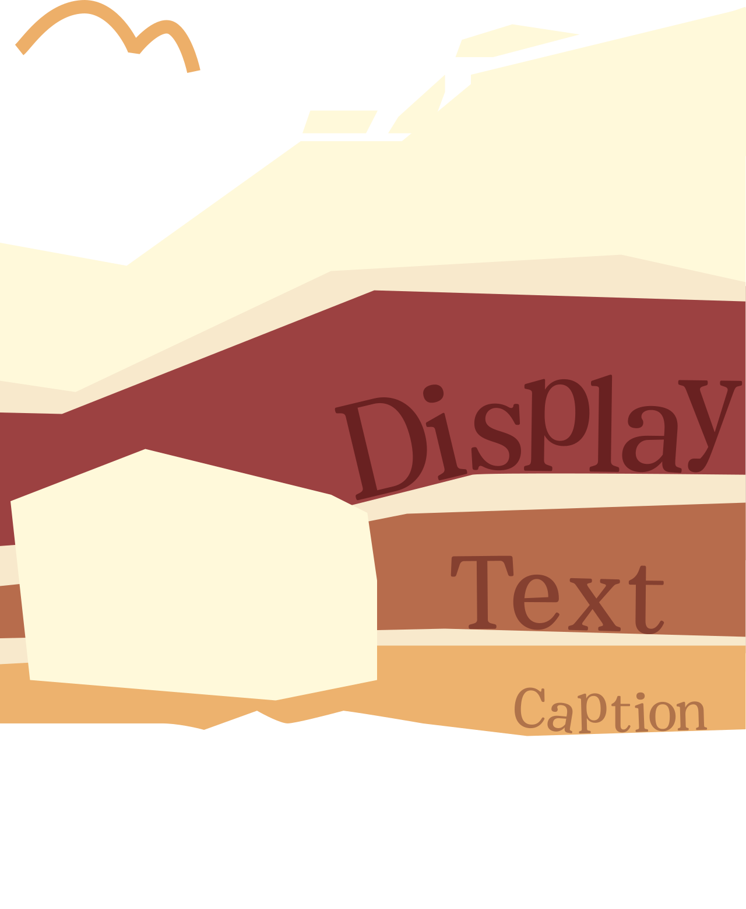
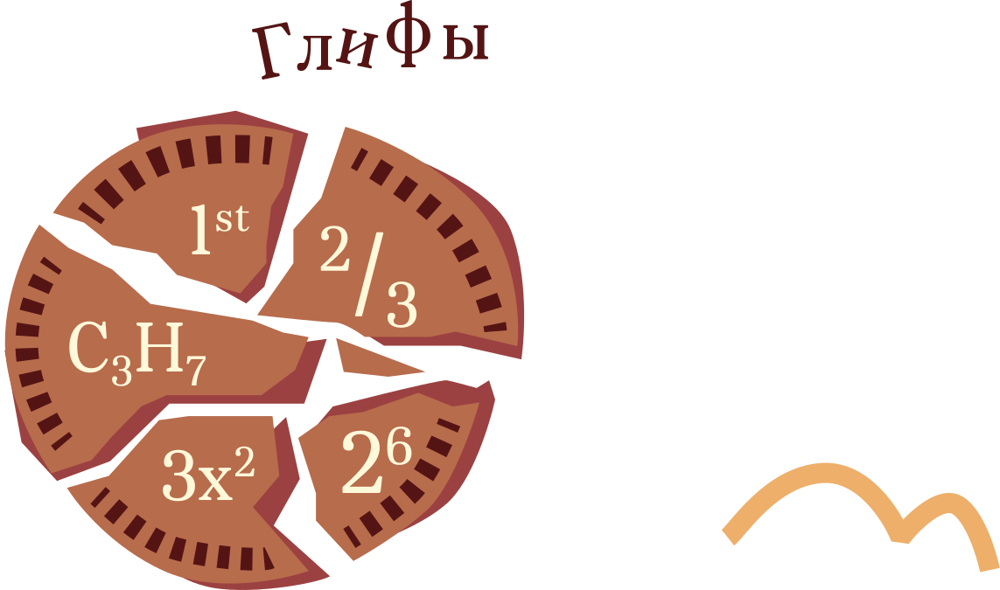
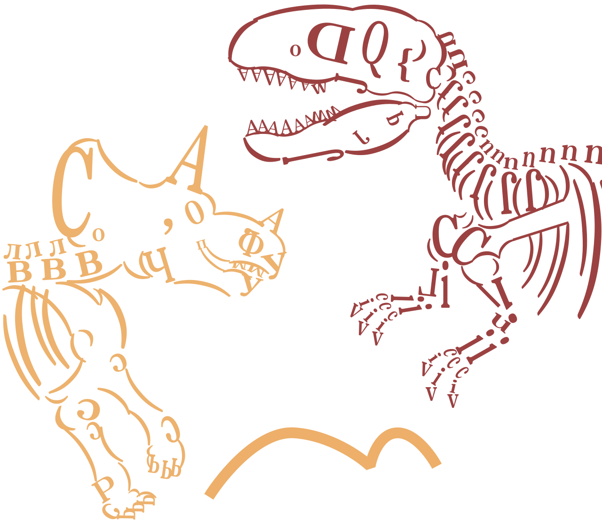
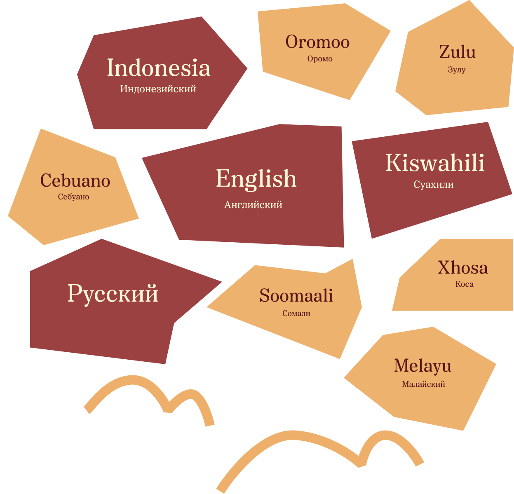

Dentegra — это современная многофункциональная антиква с выраженными «заквадраченными» деталями. В ее пластике строгость прямых форм гармонично сочетается с мягкими округлыми каплями.




Шрифт разработан в России студией Bolditalic. Екатерина Шмагина создала его в 2024 году.
Dentegra сохраняет читаемость в мелком кегле и приобретает контрастный вид в крупных заголовках.
Начертания
Всего 36 стилей, по 6 у каждого оптического размера.



Dentegra поддерживает полный спектр OpenType-функций для типографики в проектах любой сложности.
Это позволяет легко верстать математические формулы и дроби, автоматически настраивая числители, знаменатели, порядковые числительные, а также верхние и нижние индексы.

Поддерживаемые языки
Шрифт поддерживает 53 языка, тут представлены самые популярные из них.

- Студент:Ваштай Виктория
- Группа: БДЗ266
- Куратор: Сергей Гриднев